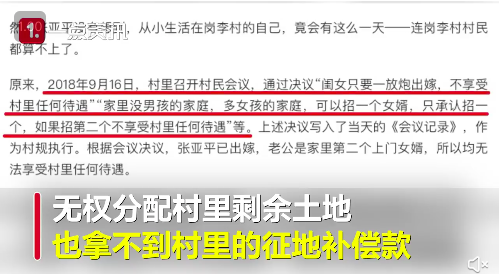

热点2022年6月|看见女性的困境和抗争

编辑：paper
数据来源：闪闪
#怀念任长霞# 大家还记得女公安局长任长霞吗？被当地百姓称为扫黑除恶“任青天”
在她的追悼会上，10余万名群众自发从四面八方赶来为她送别。群众留言册积累了150多本，敬献花篮的挽联就存了三大麻袋。
她在中原分局预审科工作期间，共挖余罪、破积案1072起，追捕犯罪嫌疑人950余人，创造了河南公安预审史上无可比拟的成绩。
她刚调任登封市公安局局长时形势非常艰难：民警队伍涣散、积案堆积如山、群众怨声不断，行风评议年年倒数第一。但在任登封市公安局局长的短短3年中，她带领民警打掉涉黑涉恶团伙20个，解决了十多年来的控申积案，共查结控申案件230多起。带领全局民警共破获各种刑事案件2870多起，抓获犯罪嫌疑人3200余人，亲自处理群众来访来信3467人（件）次。当地群众都说登封来了一位“女神警”。
联合国人口基金报告：全球将近一半妊娠为非意愿妊娠
见所不见——对被忽视的非意愿妊娠危机采取行动（以下为报告中文摘要）
一半，这是妇女和女童在没有深思熟虑的情况下怀孕的比例。对于这些妇女来说，对生命影响最大的生殖选择 ——怀孕与否——是根本没有选择的。《2022年世界人口状况报告》提出了令人不适的问题：这对我们的价值观，我们的人生大事——我们的未来——意味着什么？
每年约有 1.21 亿例妊娠发生在没有选择怀孕或选择做母亲的 妇女身上，她们在那个时间段，那种情形下，没有与那个伴侣生育子女的计划。
这是一场看不见的危机。之所以看不见，部分原因是它如此普遍——几乎每个人都认识经历过非意愿妊娠的人——还有部分原因是对其普遍存在的污名化。
但是个人、社会和世界都为此付出了无法承受的代价。
该报告汇集了最新证据，表明非意愿妊娠是一个事关个人、 健康、人权、发展和人道主义的问题。
超过 60%的非意愿妊娠以人工流产告终。现有最好的估算是其中 45%的流产是不安全的。不安全的人工流产是全球孕产妇死亡和数百万妇女住院的主要原因。
妇女和女童一旦被剥夺了选择是否怀孕的机会，她们可以获得的其他机会就会骤减。非意愿生育往往使她们身心健康状 况恶化。怀孕的女童或被迫结婚、或辍学。许多妇女退出了劳 动力市场。身处虐待关系的妇女面临非意愿妊娠的风险是其他妇女的两倍，而妊娠会使她们更难与施暴者脱离关系。
在每年数百万的非意愿妊娠中，许多会被欣然接受；还有一些，尽管会带来恐惧或焦虑，但最终降临的孩子还是会深受宠爱并带来巨大的幸福。每个由于非意愿妊娠而出生的孩子都是一个具有内在价值、尊严和人权的人。
但是这些都无法让我们否认非意愿妊娠可能会产生在几代人中 挥之不去的恶劣负面影响。
有人会失去教育或获得收入的机会。有人会急剧陷入贫困。累积的代价是巨大的，它将花费医疗系统数十亿资金。
该报告中的原始研究是依据最新公布的国家层面关于非意愿妊娠的估算，并将其与社会经济发展水平、性别不平等程度、孕产妇死亡情况和人工流产方法获取情况等数据进行比较。报告发现，发展水平较低、性别不平等程度较高、孕产妇死亡率较高，以及人工流产法律更为严格的国家面临的非意愿妊娠比率更高。
未婚妇女或女童非计划怀孕往往被人认为“行为不检”或 被斥为“不负责任”。很多情况下蒙羞的不仅是其本人，还有其家庭。而已婚妇女面对非意愿妊娠的情况如何呢？人们往往假 定其想要怀孕、应该怀孕或者最起码，她们能够应对怀孕。这是对她们个人意愿和选择权的抹杀。
是时候远离陈规观念——并看一下数据了。可持续发展目标的最新证据显示，在有数据可查的国家，近四分之一的妇女无法对性行为说不，近四分之一的妇女无法对自己的医疗健康拥有决定权。近10%的妇女不能自主做出关于避孕的决定。这提醒我们，还有许多人——尤其是妇女和女童—— 无法充分行使其基本权利。它也赫然提醒我们性别歧视在我们的生活中无处不在。
事实上，研究显示，每一名育龄妇女和女童都面临非意愿妊娠的风险——包括那些不认同自己是妇女或女童身份的人。每种避孕方式都有一定的失败率。许多妇女无法获得适合自己身体和情况的避孕方法，或根本没有获得避孕药具的途径。令人不安的是，在世界的每一个角落，社会压力、性别暴力和胁迫无处不在。同性恋、双性恋、跨性别和双性别（LGBTI）人士面临类似的、有时甚至更大的非意愿妊娠的 风险，污名化以及日益增长的获取生殖健康医疗服务的障碍使这一切雪上加霜。
家庭计划项目在全球产生了巨大的影响：世界每个区域对避孕药具的使用日益增加，未得到满足的需求在下降。但是，全球依然有 2.57 亿想要避孕的妇女没有用上安全、现代的避孕药具。这其中，1.72 亿人完全没有使用任何方法避孕。为什么？
报告一反常识，它显示缺乏获取的手段或知识已经不再是不使用或停止使用现代避孕药具的最常见的原因。事实 上，报告显示人们对副作用的担心或体验、性行为不频繁、 反对避孕、产后哺乳期闭经是更为常见的原因。除此之外，来自包括老师或医务工作者在内的各种渠道的流言和不实信息也是原因之一。
所有这些表明，女性没有充分准确地获得关于自己身体或权利的信息。她们没有足够的避孕选择。她们在害怕或经历副作用时也没有获得支持。
为了帮助那些落在后面的人，我们需要解决污名、不实信息，向医务服务提供者培训，解决全面性教育和性别不平等的问题。全球各地的妇女应该获取一系列的避孕方法，在决策时获得充分的信息和支持，获得后继护理并在经历副作用或情况改变时拥有新的可供选择的方法。
我们必须解决司法体系往往无法追究性暴力者和胁迫者的责任，让受害人承担因遭受非自愿性行为和潜在怀孕后果而背负的污名问题。
我们必须改变那些使这个危机不为人知的现象。当近一半的妊娠为非意愿妊娠时，社会能声称妇女在生育以外的价值被充分重视了吗？当做母亲被视为一种必然时，它真的得到重视了吗？是时候重视妇女和女童的价值了。是时候让她们能够深思熟虑，做出生育相关的选择。是时候认识到她们真正的价值了——超越和包括做为母亲的价值。
来源：联合国人口基金会《2022年世界人口状况报告》。www.unfpa.org/swp2022
#高校通报教师朋友圈发布侮辱女性言论#【停止教学，严肃批评教育】
近日，网曝山东政法学院教师支某多次在朋友圈发布侮辱女性言论。截图显示，支某谈论唐山打人事件时说，打人男子搭讪被拒，难免恼羞成怒。16日，山东政法学院通报称，已将法学院教师支强调离教学工作岗位，停止其一切教学活动，由法学院党总支对支强进行严肃批评教育，责令作出深刻书面检查，组织部进行诫勉谈话，并取消支强本年度评先评优、职务晋升、职称评聘、人才计划申报等方面的资格。
#如果惩治性骚扰像查酒驾#【职场性骚扰亟待消除】
1111人力银行发布的调查指出，国内逾半数上班族(50.7%)曾遭遇过职场性骚扰；从性别来看， 8成女性曾遭遇过，男性也有近2成。
1111调查并指出，上班族性骚扰类型，以有意的身体碰触(67.6%)及言语骚扰(61.5%)，两者比例最高；发生性骚扰的地点以办公空间(60.6%)最多，其次是公开场合(24.7%)；发生性骚扰的时间则以上班时间(65.7%)最多；出手骚扰的人主要是同事(33.0%)、老板(22.7%)和直属主管(14.5%)。
1111人力银行副总经理何启圣说，上班族为保住饭碗，遭遇性骚扰通常选择低调处理，根据劳动部性别工作平等申诉案件统计，近年性骚扰受理件数，平均一年不到150件，显示采取法律途径的上班族只是少数，隐藏在背后的黑数恐更惊人。
上班族遇职场性骚扰，当务之急要将事发经过妥善保存纪录，并进行搜证，以录音或拍照、录影的方式留下证据，若对方继续伸出咸猪手，可先向公司内部管道申诉，若未解决，可进一步向主管机关申诉，保护自身权益。
#网友建议西安加大男教师招聘力度#【为什么规定比例是性别歧视】
规定比例，分开招录，实行男女不同分数线，实际上就是规避公平竞争，让原本低分不合格的部分男性上岗的手段。本来成绩合格的男性不需要这样的“特权”，这是对他们的轻视。而成绩更优秀的女教师则被原本不合格的男教师替代了。
规定男女教师招聘比例1:1的根本原因在于性别歧视。学校等单位出于性别偏好想要多招男性教师，可是如果公平竞争，一小部分成绩不合格的男性竞争不过女性，在第一轮笔试当中就被刷了下去。为此，他们想出来规定招考男女比例，分开招录，直接提高女性录用标准，实行男女不同分数线。《中国妇女报》在14年就发博关注过此问题，批评南京市教育局的做法。
大队则之前就接收过非常多的同类投稿，其中重庆万州2019年上半年事业单位招考中，分男女岗的小学语文教师，男性进入面试线的专业成绩为45.5分，女性进入面试线专业成绩为68分；小学数学教师岗位，男性进入面试线专业成绩为48分，女性进入面试线专业成绩为54.5分。小学英语教师岗位，男性进入面试线专业成绩为57分，女性进入面试线专业成绩为73分。规定比例，分开招录，实际上就是规避公平竞争，让原本低分不合格的部分男性上岗的手段。本来成绩合格男性的不需要这样的“优待”，这是对他们的轻视。而成绩更优秀的女教师则以被原本不合格的男教师替代了。
据《中国中小学教师发展报告》，从全国范围来看，基础教育(含学前教育、中小学教育)，女教师所占比例为52.93%，在总数上男性比例只略低于女性。求男若渴”之心将教师入业水准降低到了一大截门槛。不仅违反法律法规，违反我国男女平等的基本国策，也违背了社会主义平等公正的核心价值观。循公平原则，用统一的尺度来衡量人才选拔，而不是人为的进行性别划分 。
#美国最高法院取消宪法规定的堕胎权#
堕胎本来是一个简单的女性生育选择问题，却在宗教和政治的介入下，成为一个社会争议话题，女性对身体的自主权沦为政治博弈的筹码。
一、让生育回归生育本身，女性主宰人生规划
人们常说十月怀胎，但迎接一个新生命的诞生，又何止十个月？从备孕到生产、照顾婴幼儿，女性会经历短期的职业发展停滞，甚至牺牲职业前途。女性为生育付出的代价绝不仅仅是时间这一个维度，这已经是共识。
因此，关于生育的决定应当尤其本人做出并负责，这是成年人的基本素养。而部分最高法院的法官却认为女性轻率地做出了堕胎的决定，将来会后悔。从未有法案基于男性会后悔来反驳其个人选择的权利，这种理由否定了女性作为个体的理性思考能力。正如一个常见却容易被人忽视的现象或表述——“妇女儿童权益保护”一样，将妇女与儿童并列在一起，承认了妇女的弱势地位，也否定了妇女作为成年人独立的思考与行动能力。
已故的金斯伯格大法官就认为“罗伊案”的判决应基于宪法中平等权的声张，而非隐私权。限制堕胎侵犯了宪法赋予女性的平等权利，即女性定义自己人生选择的能力。而“罗伊案”的判决是从隐私权的角度，即“个人私生活的决定权不受政府或社会力量的支配”，基于对孕期三阶段的堕胎权益分配，宣布德克萨斯州堕胎法在程序条款上无效。因此，这项判决实际上保护的是孕妇堕胎的相对权利，而非绝对权利，这也为处于保守阵营的各州通过各种条款限制堕胎权留下了可操作的空间。
二、如果“罗伊案”被推翻，后果会有多严重？
“国会或州立法机构做什么并不重要，总还有其他的州会提供这种便利，只要承担得起费用，女人们就可以去做。只有付不起钱的女人才会受影响。”金斯伯格大法官一针见血地指出了问题所在，如果堕胎权遭到严格限制，那么底层女性将失去政府、法律、保险等公益性的保障，其堕胎风险性将显著提升。
有研究结果显示，女性的家庭选择决定权越低，其与丈夫讨论生育意愿的可能性也越小，而且不太可能去使用避孕工具，没有生育决策自主权的妇女比有自主权的妇女多0.26个孩子。而另一项研究发现，在20世纪80年代早期的中国农村，如果男性收入保持不变，成年女性收入每提高7.7美元将会使女孩的存活率提高1个百分点，并且使男孩与女孩的受教育程度同时提高。与此相反，在女性收入不变的条件下，提高男性收入则降低了女孩的存活率和受教育水平，但对男孩的受教育水平却无显著影响。单独提高家庭总收入对女孩的存活率和受教育水平都没有影响。也就是说，如果妇女经济水平提升，女儿的存活率和子女的受教育水平皆会提升。这项研究再次肯定了张桂梅校长办学的意义。要保护下一代，首先要让女性获得平等的受教育机会和工作待遇，自主地做出选择。
如果说大洋彼岸的权利争取离我们还有些遥远，那么2010年海南曾出台规定，对怀孕14周以上擅自终止妊娠者，将实行责任追究，取消生育指标，如再生育的，按超生处理。这项法规的目的在于抑制新生儿中男婴比例过高的现象。与此相似的还有2007年河南省的相关条例规定。然而要扭转重男轻女的思想，控制女性的子宫只是治标不治本而已。
在《使女的故事》中有这样一段台词：我知道你们肯定觉得很奇怪，但是平常的事也是你们逐渐习惯的。或许你们现在还觉得它不平常，但一段时间过后，你们会习惯的。敏感是许多女性的特质，但许多人对政治似乎并不敏感，或者是在社会化的培养过程中主动放弃了这份敏感。然而政治棋局与个人命运也休戚相关。一个不关心政治的成年人，将被决定。"
#大学专业没有冷门热门之分#【填报大学志愿，你需要知道哪些专业收入高】
从未来薪资发展看，信息传输、软件和信息技术服务业等相关专业的毕业生收入仍保持领先。
在毕业三年后，“软件工程”成为月收入最高的专业，平均每月收入 11596 元，除此之外，“网络工程”、“物联网工程”和“计算机科学与技术”专业的平均月收入都超过 1 万元。
“金融学”、“建筑学”后来居上，跻身毕业三年后薪酬前十榜单，而原来毕业半年后薪酬最高的“信息安全”则掉出毕业三年后收入前十榜单。
教育相关专业毕业三年后薪资水平仍然不高。“小学教育”和“学前教育”专业毕业三年后薪资依然垫底，且与全国平均水平差距越来越大，比全国同届本科生毕业三年后平均工资低近 2200 元。
由此可见，虽然拥有寒暑假等福利，但教师在工资水平方面处于劣势。
从毕业薪资上看，文科生劣势明显。
在毕业半年薪酬前十榜单中没有文科专业，毕业三年后薪酬前十榜单中也只有“金融学”这个专业文科生也可报考就读。而无论是毕业半年还是三年后毕业薪资最低的专业几乎都是文科专业。
在现代社会，拥有技术可以更快地换取经济回报，所以理科专业的毕业薪酬比较高。
而文科专业，比起技术更多地要求理论知识和经验积累，本科毕业生们在就业市场上竞争力相对较低，因此能拿到的薪酬也比较低。（网易数读）"
#女子出嫁被取消村民资格无权分土地# 二审败诉后提出再审被受理
据天目新闻消息，近日，河南郑州。岗李村女子张亚平因出嫁后被剥夺了村民资格，无权分配村里剩余土地，也拿不到村里的征地补偿款。据该村村民会议表示，“闺女只要一放炮出嫁，不享受村里任何待遇”“家里没男孩的家庭，多女孩的家庭，可以招一个女婿，只承认招一个，如果招第二个不享受村里任何待遇”。张亚平属于后者，她先后两次提起诉讼，要求村组织发放相应补偿款40余万元。但法院一审以“征地补偿费的使用、分配方案属于村民自治范畴的事项”驳回起诉。一、二审均败诉后，她又于今年4月提起了再审。目前，再审申请已被河南高院受理。

女子龙舟队
"以前由于民间禁忌，女子不能登上龙舟，谢惠容打破这一禁忌，让村里的妇女们有了自己的龙舟队。女性们打破桎梏，加入到龙舟运动中来，为传统文化注入生机活力，凝聚女性力量。
@女性体育
端午安康，大家吃什么馅的粽子呀
端午节介绍一些女子龙舟队🐲🚣♀🚣♀🚣♀🚣♀🚣♀
在过去，许多地方的龙舟竞渡均不许妇女参加，认为妇女接触龙舟很不吉利。很多女性儿时经常看村里的男人们划龙舟，却不被允许触碰，她们只能远远地看着，即便喜欢，也无法尝试。如今各地都出现了女子龙舟队，女性终于可以加入到龙舟项目上，那些从小对龙舟喜爱却只能敬而远之的女性有了了解、尝试并且参与龙舟比赛的机会。
1986 年，万江开始组织女子划凤艇这一赛事。凤艇长 10 米，艇上头部 1 人打鼓，14 名桡手，赛手头戴太阳帽，身穿短袖运动衣和球裤，飒爽英姿，随着指挥者的鼓点起水、转舵、划水，轻盈敏捷，充分显示女运动员的力量和智慧。
2019年的中华龙舟大赛重新恢复了职业女子组，让女划手有了施展的舞台，同时也吸引了更多女性龙舟爱好者加入。
九江女子龙舟队，自2008年成立以来，转战于国内外，斩获金牌138枚。其中的队员大部分是渔民、农民“转业”。
在建国70周年庆典中，九江女子龙舟队的方金彩（图5中）作为龙舟以及群众体育的代表，出现在27号“体育强国”方阵花车中。时年57岁的方金彩，2008年加入九江女子龙舟队，是队里年龄最大的一名。她与队友们奋力拼搏，在国内外高端龙舟赛事中收获众多金牌。2015年，方金彩向南海区九江龙舟俱乐部申请退休，但在2017年天津全运会龙舟赛上，她再次披挂上阵，作为广东女子龙舟队队长，与一群平均年龄42岁的队员们一同征战，包揽了龙舟项目女子组全部6枚金牌，取得了辉煌的成绩。
福州连潘村志愿者、晋安区惠容微家志愿者组成的龙舟队，是福州最早成立的一支女性龙舟队。这支独特的龙舟队伍中既有上至奶奶岁数的划手，也有刚刚参加工作的年轻人。大部分成员也是惠容微家的志愿者。连潘村女子龙舟队召集人谢惠容是福州市妇联执委、连潘村妇联主席、晋安区惠容微家负责人。她介绍，她们这支女子龙舟队成立于2003年，以前由于民间禁忌，女子不能登上龙舟，谢惠容打破这一禁忌，让村里的妇女们有了自己的龙舟队。
像这样由各行各业女性组成的民间女子龙舟队还很多，女性们打破桎梏，加入到龙舟运动中来，为传统文化注入生机活力，也丰富了她们自己的生活，在强健身体的同时也打开心扉，凝聚女性力量。#上场吧女孩# #女性的力量值得被看见#"
#女子痴迷减肥瘦到50斤致多脏器衰竭#【你知道吗？为什么女性更瘦却更希望减肥】
我们不反对女人对自我形象的关注。但我们崇尚自然之美、健康之美、人性之美以及自由之美。如果把商业文化和传统文化合谋后刻意给定的女性美的标准作为自己极端的生活方式和人生价值去追求，那么，女性在获得涂脂抹粉和改变身体的自由后，就有可能失去人格的独立和尊严，更深的沦为男性的附庸和玩物。
因为自古女性身体美就不是单纯的个体行为，而是一种内涵丰富的文化，铭刻着男性中心文化的深刻烙印。而在这种文化底下，女性美的历史充满着性别歧视和压迫的斑斑泪痕。
英国一位学者蔼理斯说：“什么时候女性才开始打扮呢？是女性失去了地位、需要哀求男人和让男人看自己时。因此，两性中谁去打扮，关键在于两性的社会地位，即谁处在下风”。（荣维毅，2001）
回溯我国传统女性身体美审美标准产生的历史及其演变过程，就会理解这句话的意蕴之深。
在原始时代，男女两性是一种平等的“伙伴关系”，女性的生育之美、创造之美和奉献之美成为人们讴歌的对象。随着阶级社会的产生和父权制的确立，妇女地位发生了根本性的转变，女性被剥夺了审美主体地位，被异化为男性的审美客体。权力和经济地位决定了男性主宰女性美的程度，因此，“千红一哭”、“万艳同悲”成了古代女性美被蹂躏的真实写照。正如一位学者所言“一部女性美的历史，实质上不过是我国历代男性统治者，尤其是最高统治者遴选、霸占、掠夺、玩弄、践踏女性美的历史，是中华美女的血泪史”。（刘巨才，1998）
女性审美主体地位的丧失，也是对女性道德美和形体美双重标准演化的结果。“礼教”妇德是男性中心社会权力和财产传承系统为控制、统治女性而制定的，它造就了一代代逆来顺受、委屈求全而又弱不禁风的女性形象，使女性精神与体质都在向“弱化”的方向发展。由于它过于强调“男女有别”，人为的使性别差异扩大化，制造了许多“男尊女卑”、“男强女弱”、“男刚女柔”、“男外女内”、“男主女从”等一系列男女有别的性别二元对立，并不断强化女人的价值就是让男人满意和愉悦等传统观念，至今仍影响着两性关系的和谐与协调。
正如尼采所言：“男性为自己创造了女性的形象，而女性则模仿这个形象创造了自己”。女性在失去了审美的主体地位后，便按照男性权势者的审美标准，把审美情趣集中到自我包装、自我美化上来。因此，在深宫豪宅以至草野民间，都演绎了一幕幕历史悲剧。“楚王好细腰”，而 “宫人多饿死”；男人喜欢“纤纤玉笋裹春云”，女性则不惜代价，进行自残式的缠足。“女为悦己者容”，正是女性接受和认同被弱化和被客体化、被物化现实的一种体现。
男性统治者不仅制造了一系列的女性美标准让女性去遵从，以供自己把玩，而且还把女性美作为战利品、作为商品或动物在权贵者中进行交换、馈赠和出卖，这种情况在民间也是如此。比如，明末清初文学家张岱在《陶庵梦忆》中对扬州“瘦马”（一些美貌的女孩子）交易过程的记载，这种买卖与市场上的牲口交易没有两样。不把妇女当人看，而只是当作男性的附属和玩物，这是病态的女性审美文化的本质所在。
我们希望男女两性共同努力，从病态的审美文化中突围，共同塑造健康美丽的新女性形象。我所说的美丽不仅是容貌和身材，而是一个健康的、散发着生命活力和创造力的身体，一个能愉悦的接受和理解自己和他人身体的良好心态，而这种心态的获得，有赖于一个能容纳人们多元的生存状态和不同体貌类型的社会审美文化环境的存在。只要是一个身体健康、心智健全、并愉悦于自己所处的环境的人，都是美丽的。
（文：姜秀花 健康的就是美丽的——对减肥整容等女性身体再造行为的文化评析）